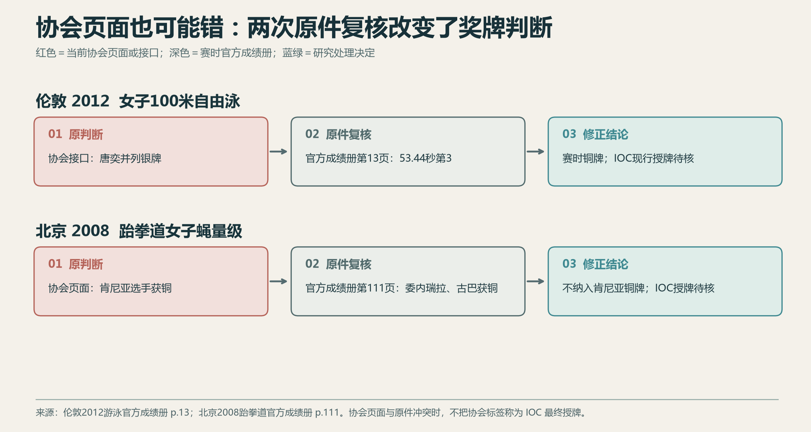

主办奥运，奖牌份额就会增加？
九个现代主办案例中，多数主办届的获奖运动员行份额高于前一届。这个模式很容易被读成必然规律。
阅读主场专题 ↗九个现代主办案例中，多数主办届的获奖运动员行份额高于前一届。这个模式很容易被读成必然规律。
阅读主场专题 ↗2012 年为 3.04%，主办的 2016 年为 2.47%，下降约 0.57 个百分点。图表突出主办届，但这个反例没有否认其他案例的上升。
查看复算口径 ↗巴西相对五个前届份额匹配的代表团，平均变化仍高约 0.13 个百分点。只能说这组描述性比较给出不同读法，不能声称严格因果效应。
查看比较组 ↗按官方获奖小项统计，巴黎 2024 西班牙的金牌榜位列第 15。团队小项只计一枚金牌。
亲手切换口径 ↗运动员行计入同一团队小项的多名获奖者。名次变化是统计单位的结果，并不是官方榜单发生了变动。
查看双口径表 ↗官方小项回答“赢了多少个小项”；运动员行回答“留下多少条获奖者记录”。图中的轨道只表现排名方向，不能当成奖牌数量比例。
查看完整方法 ↗世界泳联现行接口曾把女子 100 米自由泳的唐奕标为第 2 名、银牌。接口标签本身需要与原件核对。
查看异常说明 ↗伦敦 2012 游泳赛时官方成绩册第 13 页记载唐奕获得铜牌；银牌成绩为 53.38 秒。右侧切换到原件记录。
打开成绩册第 13 页 ↗协会接口标签不能覆盖赛时原件；赛时原件也不能自动代称 IOC 后续授牌状态。下方还有北京 2008 跆拳道网页错列的独立案例。
继续看北京案例 ↗同一个“奖牌”标签，可能来自旧抓取、协会接口、赛时成绩册或 IOC 后续裁决。我们保留冲突，并展示复核如何改变判断。

世界泳联当前接口将她标为第 2 名、银牌，时间也与另一选手相同。
伦敦 2012 游泳赛时官方成绩册第 13 页记录她获得铜牌；银牌选手成绩为 53.38 秒。
不以协会接口改写该项历史奖牌；现行 IOC 授牌状态另列待核。
世界跆拳道联盟当前奖牌网页把肯尼亚选手列为该级别铜牌。
北京 2008 跆拳道赛时官方成绩册第 111 页列出委内瑞拉和古巴选手获铜。
该项采用赛时官方册核实获奖人；现行 IOC 授牌仍独立待核。
以下卡片索引现有专题的交叉核验结果。反例用于限定结论的适用范围，不冒充全部十个专题都完成了独立外部档案核验。
| 专题 | 原判断 | 反例 / 复核 | 修正后可说什么 |
|---|---|---|---|
| S1 主场 | 主办届份额必然增加 | 巴西 2016 自身份额 −0.57 个百分点，相对匹配组却为 +0.13。 | 区分自身变化与相对比较；不能宣称主办权的严格因果效应。 |
| S2 口径 | 奖牌榜只有一个正确名次 | 荷兰官方小项第 6、运动员行第 3、团队内均分第 5。 | 每种名次都绑定统计单位，历史代理不称现行官方榜。 |
| S3 地缘 | 参赛总代表团数可直接读成抵制规模 | 1984 年总量升至 140，但集合变化不能由总数表达。 | 识别代码缺席，不推断单个代表团的政治动机。 |
| S4 小队伍 | 累计获奖行第一就是效率第一 | 七案例中 TPE 累计行最多，FIJ 每千参赛行最高。 | 同时报告分母与团队项目集中度。 |
| S5 通胀 | 获奖行增多代表更容易夺牌 | 1896 至 2024 行数增加约 16 倍，但占参赛行比例下降。 | 记录规模与获奖频率分开解释。 |
| S6 身份 | 同名即可合并个人金牌 | 原表编号对应多个姓名的警报达 12,796 个。 | 身份未逐人核验前只发布记录级结果。 |
| S7 王朝 | 王朝结束等于运动员失去竞争力 | 小项更名、拆分、退出后重返会截断代理序列。 | 只研究代表团对固定小项的连续控制。 |
| S8 性别 | 获奖行接近一半即机会平等 | 参赛行、项目设置及团队规模可改变两个比例。 | 女性获奖行比例是结构指标，不是公平性的充分证明。 |
| S9 项目 | 中断出现就是永久消失 | 高尔夫历史中断后重返。 | 区分退出、重返和命名漂移。 |
| S10 项目优势 | 获奖行多即更擅长夺牌 | 接力与团队项目一枚小项奖牌会生成多条获奖行。 | 先按小项机会和参赛规模标准化，再谈竞技优势。 |